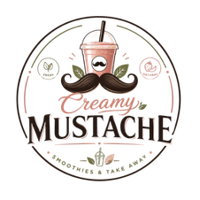

CREAM · SMOOTHIES · TAKE AWAYUne expérience culinaire pensée pour le quotidien.
Creamy Mustache réunit créativité, fraîcheur et une approche pratique de la consommation à emporter.

DIVERSIFICATION
Une marque. Plusieurs opportunités.
Une identité forte autour des produits crémeux, du take away et d’activités complémentaires.
PORTFOLIO COMPANY
Une identité forte. Une expérience accessible.
Au sein de Gabio Legacy Group, Creamy Mustache représente une activité orientée vers l’expérience alimentaire et les solutions pratiques à emporter.
La marque associe une identité distinctive à une proposition pensée pour évoluer avec ses clients et son marché.
ACTIVITÉS
Cream & smoothiesTake awayExpérience client